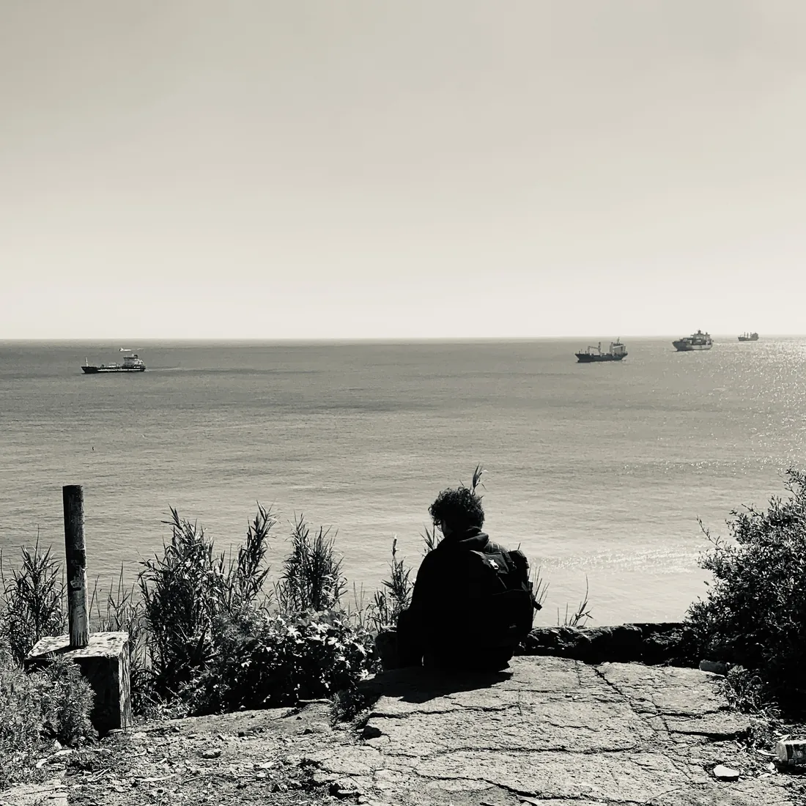
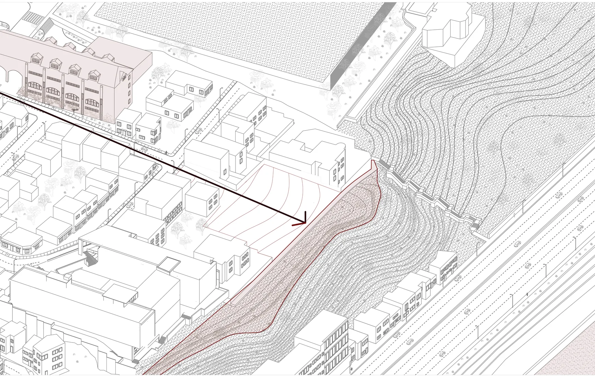
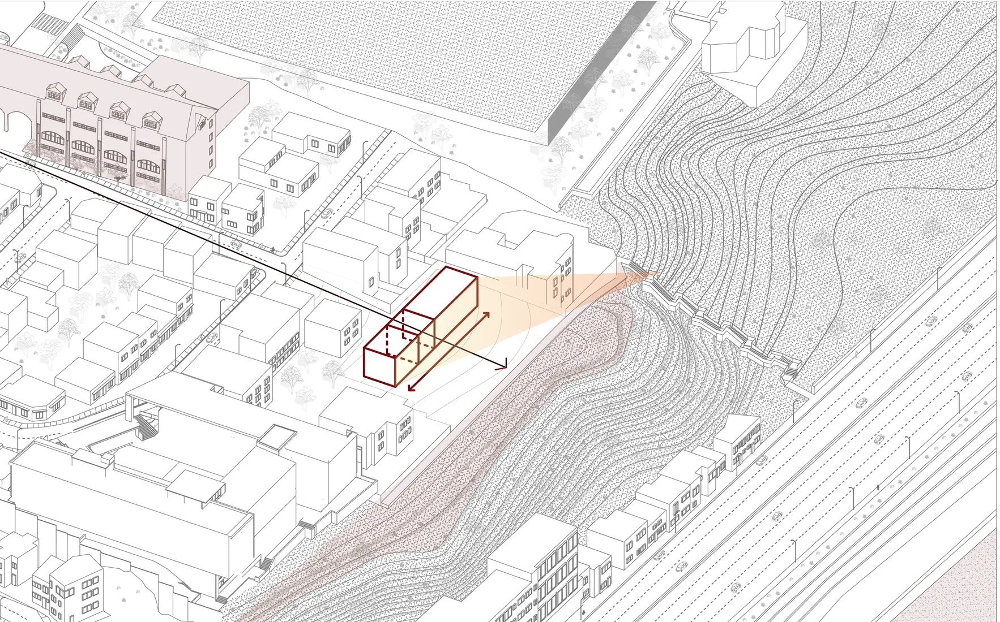
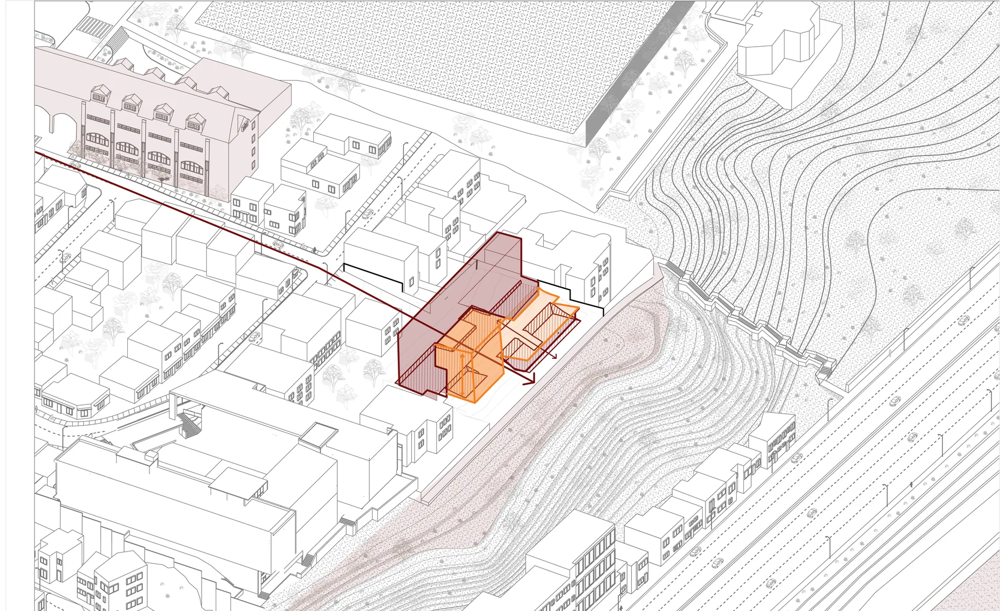
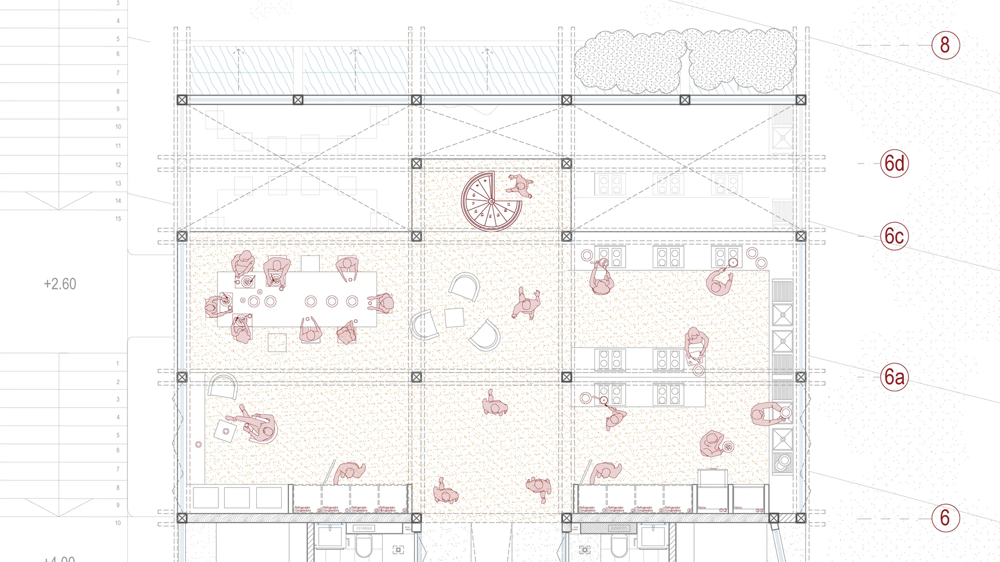
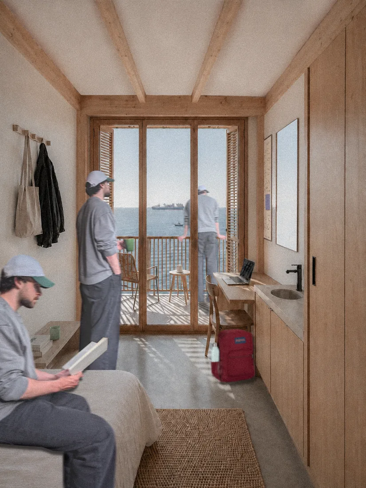

¿Cómo pueden los espacios de la cotidianidad dignificar la experiencia del estudiante foráneo en Valparaíso? El 42% de quienes estudian en la Casa Central de la UTFSM viene de otra región. La respuesta del proyecto es una decisión: la mejor orientación y las vistas al mar son para los espacios comunes, no para las habitaciones.How can everyday spaces dignify the experience of students who move to Valparaíso to study? 42% of those at UTFSM's main campus come from another region. The project answers with a decision: the best orientation and the sea views go to the shared spaces, not to the bedrooms.




La primera planta funciona como un social hub de doble temporalidad: una placa polivalente de gestión mixta que permite arrendar espacios según la demanda, y que sostiene económicamente el proyecto.The ground floor works as a social hub on two timescales: a multi-purpose plate under mixed management, where spaces can be rented as demand requires, making the project financially sustainable.

